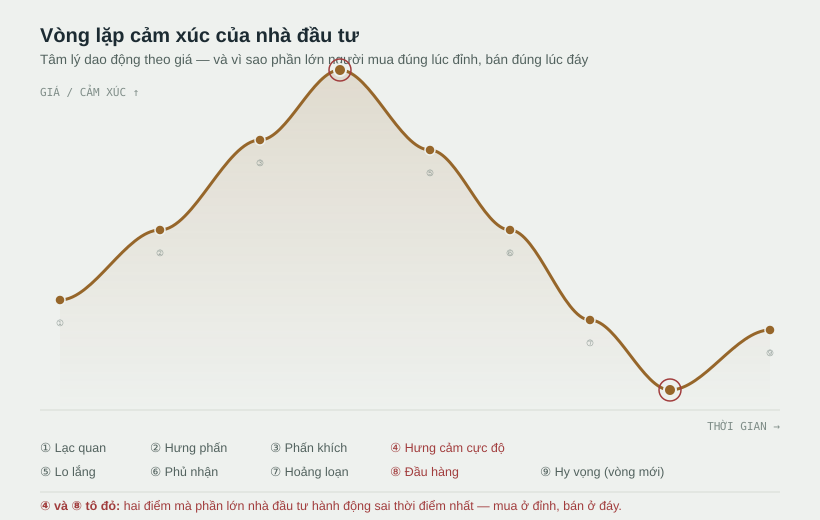

Có một nghịch lý quen thuộc: rất nhiều người hiểu rõ nguyên tắc "mua thấp, bán cao", nhưng khi nhìn lại danh mục, họ lại thấy mình đã làm ngược lại — mua vào đúng lúc thị trường hưng phấn nhất, và bán ra đúng lúc hoảng loạn nhất. Đây không phải là sự trùng hợp cá biệt. Đó là một khuôn mẫu tâm lý lặp lại qua mọi chu kỳ thị trường, được giới tài chính hành vi gọi là vòng lặp cảm xúc của nhà đầu tư.

Vì sao đỉnh lại hấp dẫn nhất để mua?
Ở giai đoạn hưng cảm cực độ, mọi tin tức đều tích cực, ai xung quanh cũng đang lãi, và cảm giác "bỏ lỡ" (FOMO) trở nên mạnh hơn bất kỳ lý trí nào. Đây chính là lúc tài sản được nhắc đến nhiều nhất trên mạng xã hội, bạn bè rủ nhau đầu tư, và có vẻ như "ai cũng đang thắng trừ mình". Bằng chứng xã hội dồn dập đó khiến việc mua vào lúc này cảm giác an toàn nhất — trong khi thực tế, đó thường là lúc rủi ro cao nhất.
Vì sao đáy lại đáng sợ nhất để giữ?
Ngược lại, ở giai đoạn đầu hàng, tin tức toàn tiêu cực, tài khoản đỏ lòm, và mọi bản năng đều hét lên "phải thoát ra trước khi mất hết". Bán ở đáy cảm giác như đang "cắt lỗ khôn ngoan", nhưng nếu luận điểm đầu tư ban đầu vẫn còn đúng, đó thường lại chính là thời điểm tệ nhất để bán — vì phần lớn giá trị phục hồi sau này thường đến rất nhanh, ngay sau giai đoạn đầu hàng tập thể.
Thị trường không di chuyển theo tốc độ của thông tin — nó di chuyển theo tốc độ của cảm xúc tập thể. Và cảm xúc của bạn, dù có ý thức hay không, cũng đang chạy theo nhịp đó.
Vậy làm sao để không bị cuốn theo?
Hiểu vòng lặp này không giúp bạn đứng ngoài nó hoàn toàn — không ai miễn nhiễm với cảm xúc. Nhưng vài thói quen có thể giúp giảm bớt mức độ bị cuốn theo:
- Viết luận điểm đầu tư trước khi mua, và chỉ bán khi luận điểm đó thay đổi — không phải khi giá thay đổi.
- Đặt lịch xem lại danh mục (ví dụ mỗi tháng một lần) thay vì kiểm tra giá liên tục — nhìn giá mỗi ngày khuếch đại phản ứng cảm xúc với từng biến động nhỏ.
- Tự hỏi mình đang ở đâu trong vòng lặp trước mỗi quyết định lớn: nếu cảm thấy quá hưng phấn hoặc quá hoảng loạn, đó chính là tín hiệu nên chậm lại, không phải tín hiệu nên hành động ngay.
Vòng lặp cảm xúc sẽ luôn lặp lại — ở chu kỳ này hay chu kỳ khác, với tài sản này hay tài sản khác. Thứ có thể thay đổi không phải là thị trường, mà là việc bạn có nhận ra mình đang ở đâu trong vòng lặp đó hay không, trước khi đưa ra quyết định.